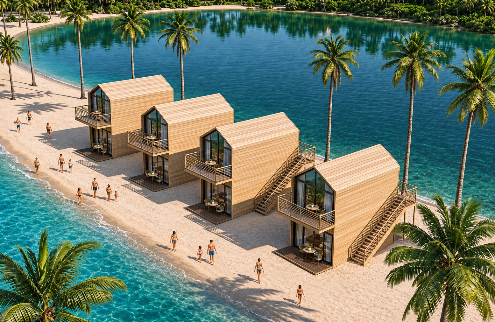
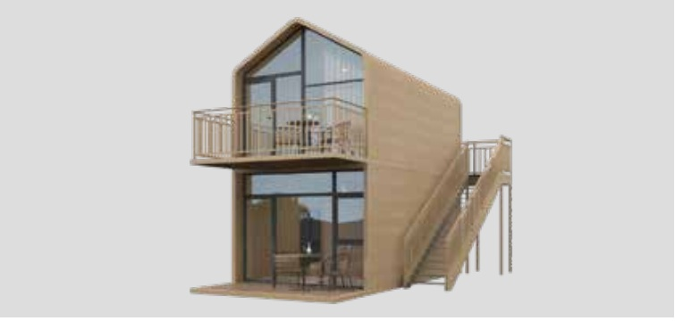
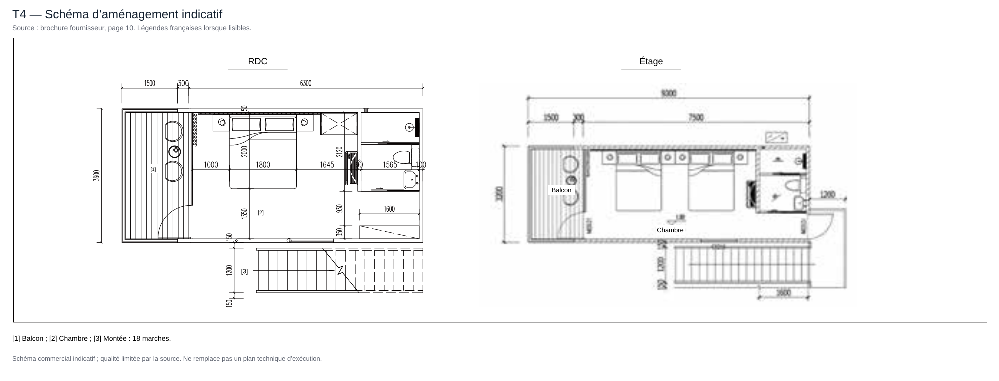

Maisons à deux niveaux
T4
La gamme à étage dans un format plus spacieux.

L’esprit du modèle
Un espace pour
votre projet.
Le T4 élargit la configuration du T3. Les plans présentent deux niveaux, des espaces nuit et des sanitaires. Les accès, balcons et aménagements sont précisés lors de l’étude.
- Deux niveaux
- Version élargie
- Plan détaillé sur demande
Pour regarder de plus près
Vues et schémas du modèle.
Vue produit d’origine et schéma issu de la brochure fournisseur, page 10. Légendes françaises lorsque lisibles ; certaines inscriptions restent à confirmer. Cliquez pour agrandir.
Voir le rez-de-chaussée en détail ↗
[1] Balcon ; [2] Chambre ; [3] Montée : 18 marches.


Agrandir ↗

Agrandir ↗Surfaces annoncées dans la documentation fournisseur, non certifiées comme surfaces habitables. Les illustrations ne valent pas validation de résistance au vent, de conformité réglementaire ou d’aptitude au milieu salin.
← Explorer les autres modèles